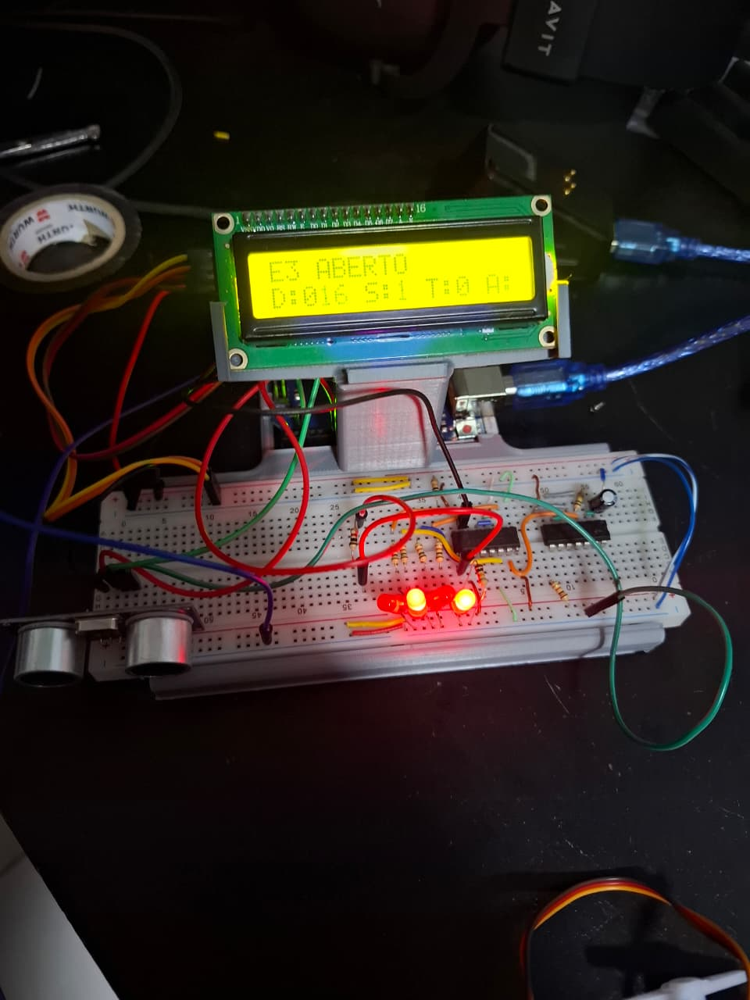

NOC Platform

Confidential internal platform for NOC workflows, configurable layouts, runtime presentation and operational automation.
I work with Python, automation, infrastructure, technical pre-sales and internal tools. My focus is connecting software, hardware and operations to solve practical problems in real environments.
I am an Electrical Engineering student with hands-on experience in technical pre-sales, infrastructure projects, automation, internal software development and troubleshooting. I enjoy building tools that make operations more efficient, organized and reliable.
A selection of technical projects involving software, infrastructure, automation, troubleshooting and engineering.
Confidential internal platform for NOC workflows, configurable layouts, runtime presentation and operational automation.

Restored a broken Ender 3 through hardware troubleshooting, electrical diagnostics and component-level analysis.

Breadboard-based electronics setup combining a digital lock, counter logic and an 8-bit ADC display system.

State-machine-based access system that detects movement, opens a servo mechanism, counts and re-arms the door logic.
Enterprise storage studies and lab activities involving technical validation, documentation and practical analysis of storage features.
Technical and pre-sales certifications related to networking, security, infrastructure and enterprise solutions.
Certification focused on campus network planning, design and pre-sales solution understanding.
Pre-sales certifications related to Dahua solutions, product positioning and technical solution support.
Dahua technical certifications focused on solution knowledge, security technologies and product ecosystem.
Pre-sales certification focused on networking solutions, technical positioning and customer-oriented design.
Practical experience with technical environments, internal systems and infrastructure-related projects.
Worked on technical documentation, infrastructure support, solution analysis and development of internal tools to improve operational workflows.
Experience with electronics, circuits, measurement, digital logic, embedded concepts and practical engineering projects.
Technologies and areas I have worked with or studied through real projects.
You can find my work and technical projects on GitHub or contact me by email.